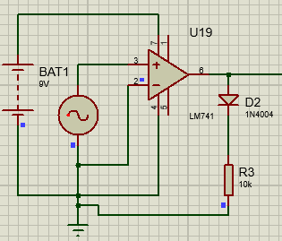
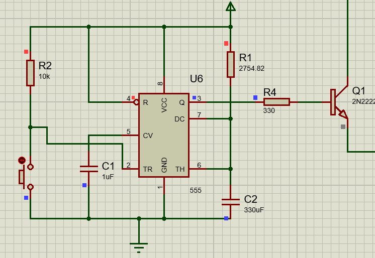
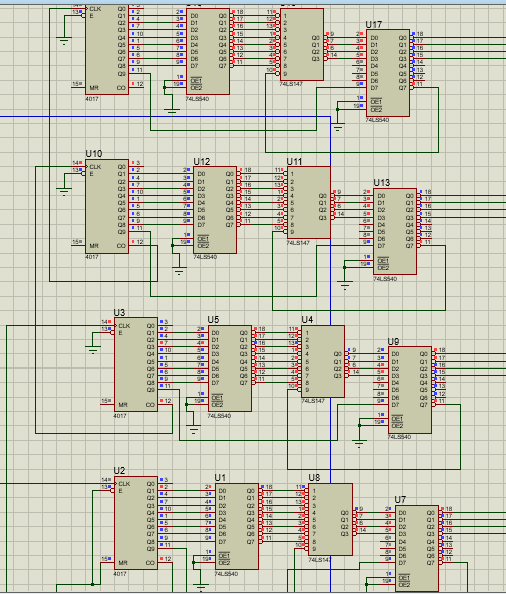

Detector de cruce por cero
Con el amplificador operacional, en modo comparador con su referencia a tierra es decir, la entrada inversora a tierra asi se detecta si la señal alterna de la entrada es mayor o menor que cero, en caso de ser mayor lo toma como 1 y si es menor la salida sera cero ya que la alimentacion no es dual simetrica.
temporizador
Ya que la frecuencia es cantidad de ciclos por segundo, el circuito monostable es encargado de activar el contador durante un segundo se activa al pulsar el boton y devuelve la frecuencia al segundo despues de activarlo.
Contador
Es la parte mas importante ya que cuenta los ciclos por segundo y asi obtener la frecuencia, el conteo radica en el bucle que se hace en el primer contador el cual cuenta de 0 a 9, al llegar a 9 aumenta 1 en el acarro del siguiente contador, que es de la decena de la misma manera se pasa a la centena y a la unidad de mil, es decir es un frecuencimetro de 1 a 9999Hz.
El 4017 es el contador de decada, el 74LS540 sirve para negar las salidas del contador, se niegan ya que la entrada del 74LS147 esta negada, el cual es un contador de decada a codificador binario, como su salida tambien esta negada se usa de nuevo el 74LS540 con el fin de mandarlo al display BCD.
